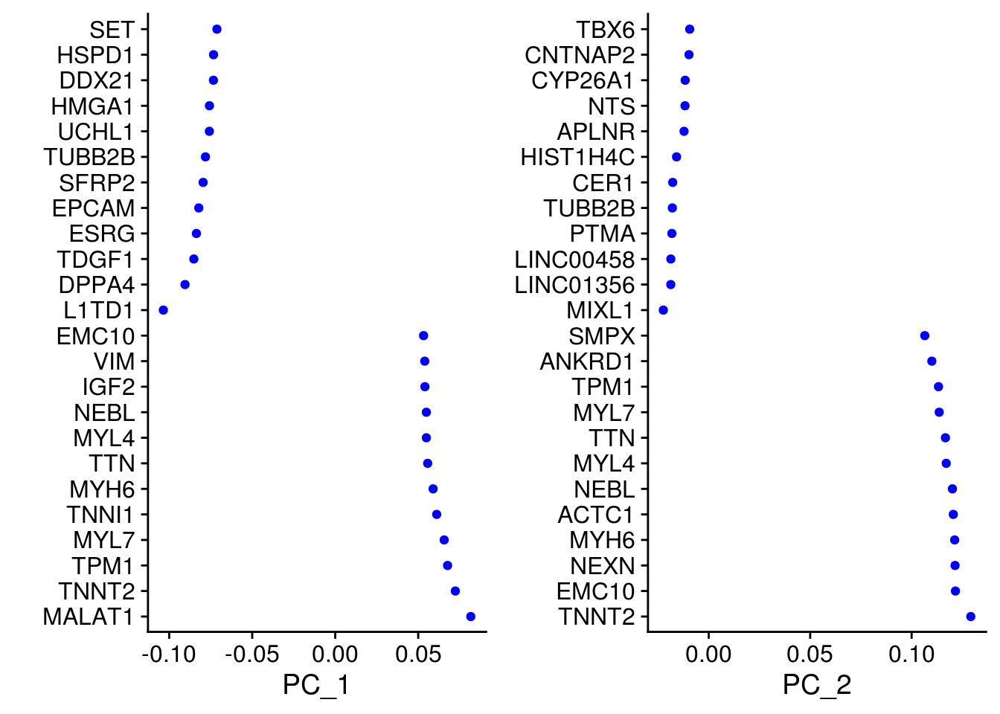
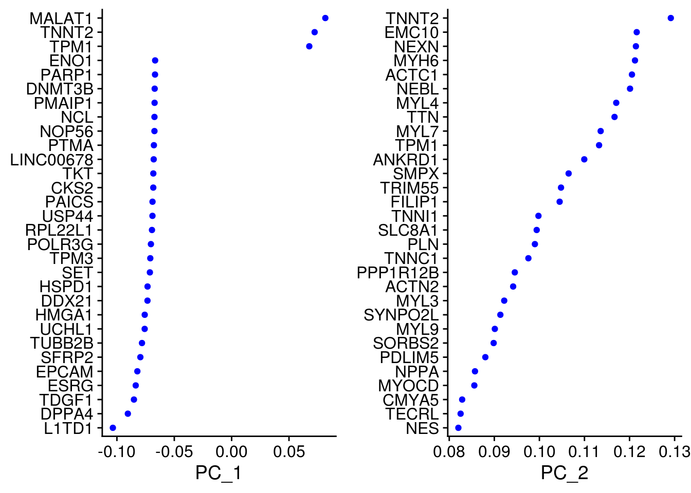
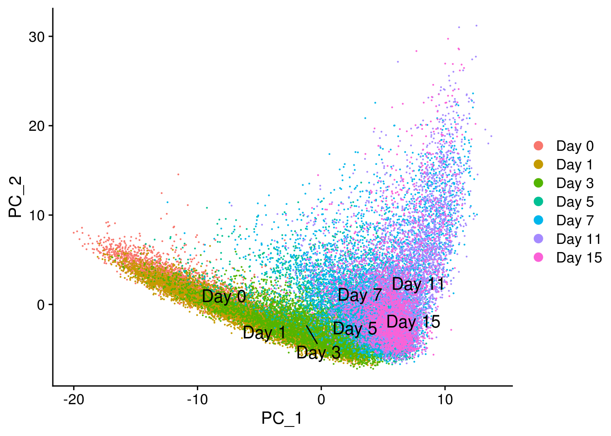
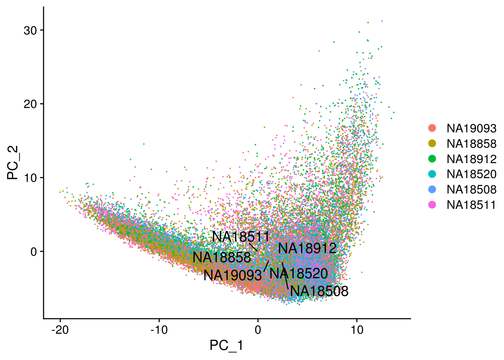
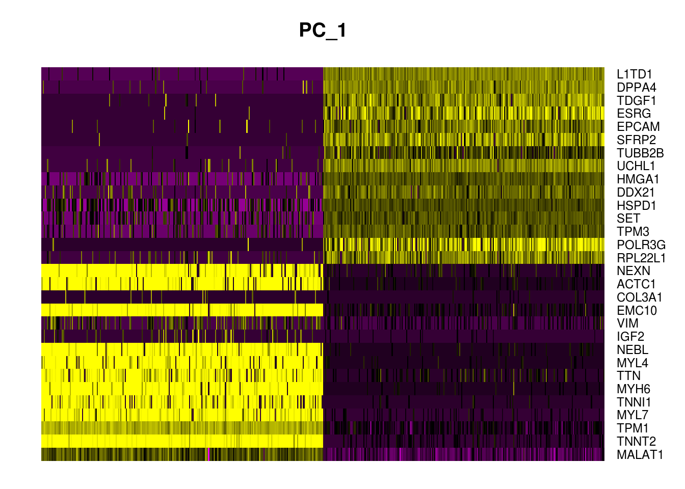
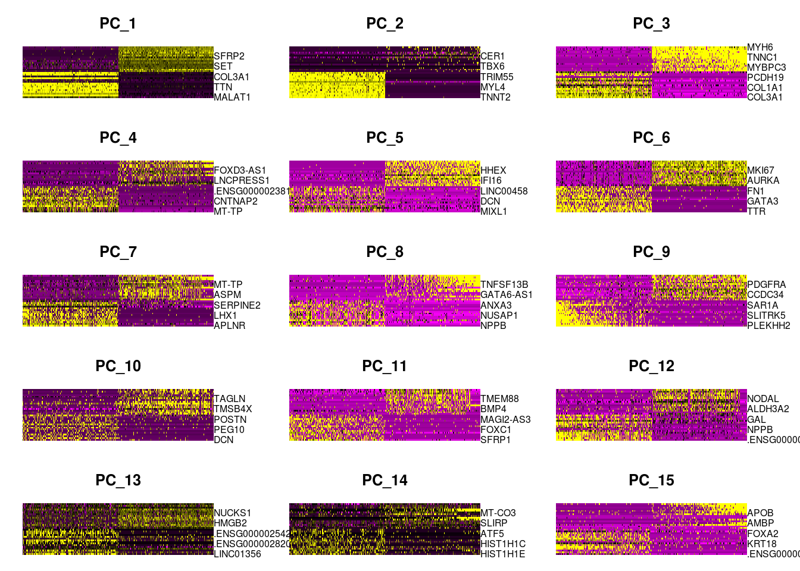
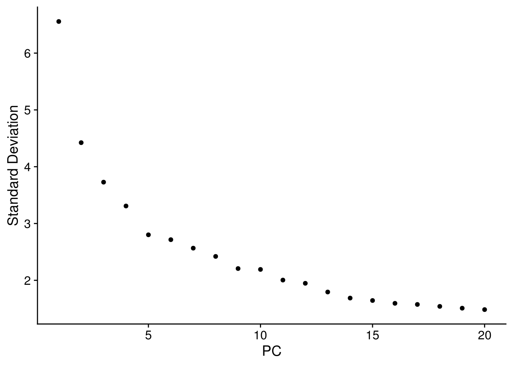
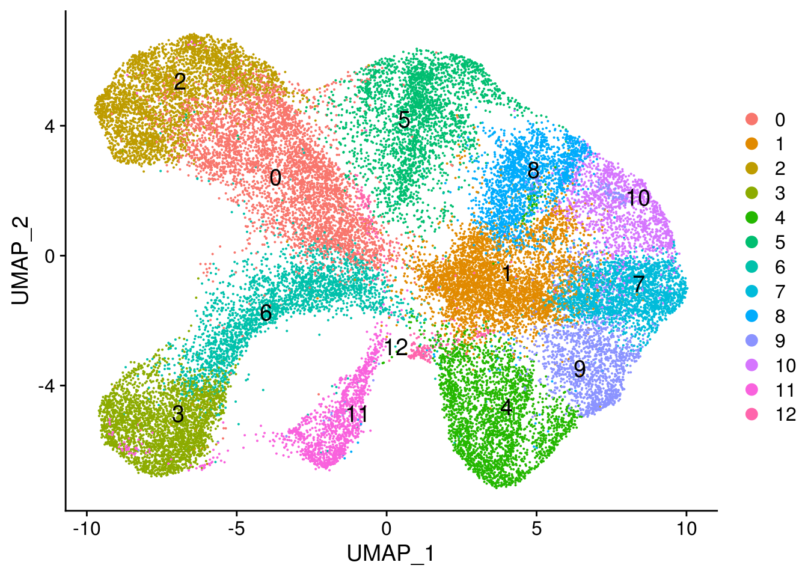
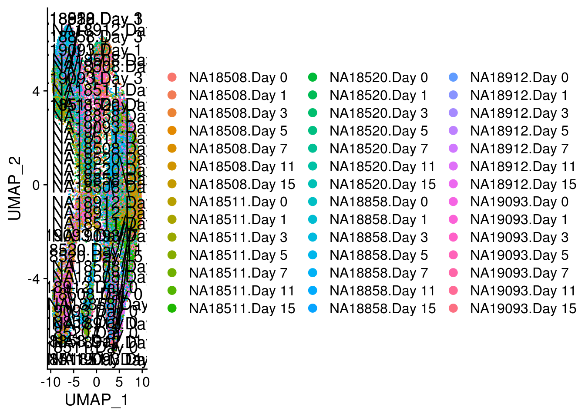
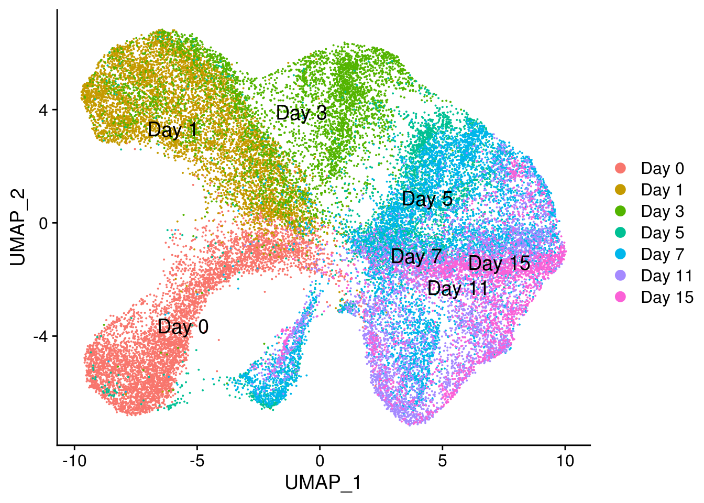

scCM_round1_lowpass_combined
Last updated: 2019-08-28
Checks: 6 1
Knit directory: Exp1_prelim_analysis/
This reproducible R Markdown analysis was created with workflowr (version 1.4.0). The Checks tab describes the reproducibility checks that were applied when the results were created. The Past versions tab lists the development history.
Great! Since the R Markdown file has been committed to the Git repository, you know the exact version of the code that produced these results.
The global environment had objects present when the code in the R Markdown file was run. These objects can affect the analysis in your R Markdown file in unknown ways. For reproduciblity it’s best to always run the code in an empty environment. Use wflow_publish or wflow_build to ensure that the code is always run in an empty environment.
The following objects were defined in the global environment when these results were created:
| Name | Class | Size |
|---|---|---|
| data | environment | 56 bytes |
| env | environment | 56 bytes |
The command set.seed(20190828) was run prior to running the code in the R Markdown file. Setting a seed ensures that any results that rely on randomness, e.g. subsampling or permutations, are reproducible.
Great job! Recording the operating system, R version, and package versions is critical for reproducibility.
Nice! There were no cached chunks for this analysis, so you can be confident that you successfully produced the results during this run.
Great job! Using relative paths to the files within your workflowr project makes it easier to run your code on other machines.
Great! You are using Git for version control. Tracking code development and connecting the code version to the results is critical for reproducibility. The version displayed above was the version of the Git repository at the time these results were generated.
Note that you need to be careful to ensure that all relevant files for the analysis have been committed to Git prior to generating the results (you can use wflow_publish or wflow_git_commit). workflowr only checks the R Markdown file, but you know if there are other scripts or data files that it depends on. Below is the status of the Git repository when the results were generated:
Ignored files:
Ignored: .Rhistory
Ignored: docs/figure/
Note that any generated files, e.g. HTML, png, CSS, etc., are not included in this status report because it is ok for generated content to have uncommitted changes.
These are the previous versions of the R Markdown and HTML files. If you’ve configured a remote Git repository (see ?wflow_git_remote), click on the hyperlinks in the table below to view them.
| File | Version | Author | Date | Message |
|---|---|---|---|---|
| Rmd | b1fbf6e | Reem Elorbany | 2019-08-29 | Adding initial workflowr files |
My goal is to combine all 18 collections into a single Seurat object. First, I need to read in the raw data for all collections.
rawdata_C1c1 <- read.table("/project2/gilad/reem/singlecellCM/round1/lowpass/CD1/CD1col1/output/dge_data/YG-RE1-Drop-CD1col1_S1_gene_counts.tsv.gz",header=T, stringsAsFactors = F, row.names=1)
rawdata_C1c2 <- read.table("/project2/gilad/reem/singlecellCM/round1/lowpass/CD1/CD1col2/output/dge_data/YG-RE1-Drop-CD1col2_S2_gene_counts.tsv.gz",header=T, stringsAsFactors = F, row.names=1)
rawdata_C1c3 <- read.table("/project2/gilad/reem/singlecellCM/round1/lowpass/CD1/CD1col3/output/dge_data/YG-RE1-Drop-CD1col3_S3_gene_counts.tsv.gz",header=T, stringsAsFactors = F, row.names=1)
rawdata_C1c4 <- read.table("/project2/gilad/reem/singlecellCM/round1/lowpass/CD1/CD1col4/output/dge_data/YG-RE2-Drop-CD1col4_S1_gene_counts.tsv.gz",header=T, stringsAsFactors = F, row.names=1)
rawdata_C1c5 <- read.table("/project2/gilad/reem/singlecellCM/round1/lowpass/CD1/CD1col5/output/dge_data/YG-RE2-Drop-CD1col5_S2_gene_counts.tsv.gz",header=T, stringsAsFactors = F, row.names=1)
rawdata_C1c6 <- read.table("/project2/gilad/reem/singlecellCM/round1/lowpass/CD1/CD1col6/output/dge_data/YG-RE2-Drop-CD1col6_S3_gene_counts.tsv.gz",header=T, stringsAsFactors = F, row.names=1)
rawdata_C2c1 <- read.table("/project2/gilad/reem/singlecellCM/round1/lowpass/CD2/CD2col1/output/dge_data/YG-RE1-Drop-CD2col1_S4_gene_counts.tsv.gz",header=T, stringsAsFactors = F, row.names=1)
rawdata_C2c2 <- read.table("/project2/gilad/reem/singlecellCM/round1/lowpass/CD2/CD2col2/output/dge_data/YG-RE2-Drop-CD2col2_S4_gene_counts.tsv.gz",header=T, stringsAsFactors = F, row.names=1)
rawdata_C2c3 <- read.table("/project2/gilad/reem/singlecellCM/round1/lowpass/CD2/CD2col3/output/dge_data/YG-RE2-Drop-CD2col3_S5_gene_counts.tsv.gz",header=T, stringsAsFactors = F, row.names=1)
rawdata_C2c4 <- read.table("/project2/gilad/reem/singlecellCM/round1/lowpass/CD2/CD2col4/output/dge_data/YG-RE1-Drop-CD2col4_S5_gene_counts.tsv.gz",header=T, stringsAsFactors = F, row.names=1)
rawdata_C2c5 <- read.table("/project2/gilad/reem/singlecellCM/round1/lowpass/CD2/CD2col5/output/dge_data/YG-RE2-Drop-CD2col5_S6_gene_counts.tsv.gz",header=T, stringsAsFactors = F, row.names=1)
rawdata_C2c6 <- read.table("/project2/gilad/reem/singlecellCM/round1/lowpass/CD2/CD2col6/output/dge_data/YG-RE1-Drop-CD2col6_S6_gene_counts.tsv.gz",header=T, stringsAsFactors = F, row.names=1)
rawdata_C3c1 <- read.table("/project2/gilad/reem/singlecellCM/round1/lowpass/CD3/CD3col1/output/dge_data/YG-RE2-Drop-CD3col1_S7_gene_counts.tsv.gz",header=T, stringsAsFactors = F, row.names=1)
rawdata_C3c2 <- read.table("/project2/gilad/reem/singlecellCM/round1/lowpass/CD3/CD3col2/output/dge_data/YG-RE2-Drop-CD3col2_S8_gene_counts.tsv.gz",header=T, stringsAsFactors = F, row.names=1)
rawdata_C3c3 <- read.table("/project2/gilad/reem/singlecellCM/round1/lowpass/CD3/CD3col3/output/dge_data/YG-RE1-Drop-CD3col3_S7_gene_counts.tsv.gz",header=T, stringsAsFactors = F, row.names=1)
rawdata_C3c4 <- read.table("/project2/gilad/reem/singlecellCM/round1/lowpass/CD3/CD3col4/output/dge_data/YG-RE1-Drop-CD3col4_S8_gene_counts.tsv.gz",header=T, stringsAsFactors = F, row.names=1)
rawdata_C3c5 <- read.table("/project2/gilad/reem/singlecellCM/round1/lowpass/CD3/CD3col5/output/dge_data/YG-RE1-Drop-CD3col5_S9_gene_counts.tsv.gz",header=T, stringsAsFactors = F, row.names=1)
rawdata_C3c6 <- read.table("/project2/gilad/reem/singlecellCM/round1/lowpass/CD3/CD3col6/output/dge_data/YG-RE2-Drop-CD3col6_S9_gene_counts.tsv.gz",header=T, stringsAsFactors = F, row.names=1)Next, I convert Ensembl gene numbers to gene names/symbols to make it more readable. To do that, first I need to get the matched Ensembl IDs and gene symbols through biomart.
# get data from biomart
ensembl = useEnsembl(biomart="ensembl", dataset="hsapiens_gene_ensembl")
geneinfo <- getBM(attributes = c("ensembl_gene_id","hgnc_symbol"),mart=ensembl)
for (i in 1:3) {
for (j in 1:6) {
# read in every raw data matrix
raw_dat_temp <- eval(as.name(paste0("rawdata_C",i,"c",j)))
# remove the version numbers from those gene IDs
gene_id_temp <-
str_replace(rownames(raw_dat_temp),
pattern = ".[0-9]+$", replacement="")
# and subset to only those genes from the full list of genes
mygeneinfo_temp <- geneinfo[geneinfo$ensembl_gene_id %in% gene_id_temp,]
# make a temporary raw data matrix with the non-version gene IDs
bm_rawdat_temp <- raw_dat_temp
rownames(bm_rawdat_temp) <- gene_id_temp
# subset temp raw data matrix to only the ones with info on biomart
bm_rawdat_temp <- bm_rawdat_temp[rownames(bm_rawdat_temp) %in% mygeneinfo_temp$ensembl_gene_id,]
# get all the index numbers for a gene list sorted by number
mygeneinfo_idsort_temp <- order(mygeneinfo_temp$ensembl_gene_id,decreasing=F)
# and sort the genes with those index numbers
mygeneinfo_sort_temp <- mygeneinfo_temp[mygeneinfo_idsort_temp,]
# get rid of duplicate ensembl IDs
mygeneinfo_s_uni_temp <- mygeneinfo_sort_temp[order(mygeneinfo_sort_temp$ensembl_gene_id)[!duplicated(mygeneinfo_sort_temp$ensembl_gene_id)],]
# deal with duplicate gene name/symbols (mostly ""s) by identifying the duplicates and then creating a new gene name for them that is genesymbol.ensemblID
dupl_temp <- unique(mygeneinfo_s_uni_temp$hgnc_symbol[duplicated(mygeneinfo_s_uni_temp$hgnc_symbol)])
for (k in dupl_temp)
{
rows_temp <- which(mygeneinfo_s_uni_temp$hgnc_symbol==k)
for (m in 1:length(rows_temp))
{
mygeneinfo_s_uni_temp$hgnc_symbol[rows_temp[m]] <- paste(mygeneinfo_s_uni_temp$hgnc_symbol[rows_temp[m]], '.', mygeneinfo_s_uni_temp$ensembl_gene_id[rows_temp[m]],sep='')
}
}
# make a gene info matrix with the now unique gene symbols
mygeneinfo_gsym_temp <- mygeneinfo_s_uni_temp[order(mygeneinfo_s_uni_temp$hgnc_symbol)[!duplicated(mygeneinfo_s_uni_temp$hgnc_symbol)],]
# add those new gene names/symbols as rownames in the raw data matrix
rownames(bm_rawdat_temp) <- mygeneinfo_s_uni_temp$hgnc_symbol
# output the raw data matrix with the proper collection name
assign(paste0("bm_rawdat_C",i,"c",j),bm_rawdat_temp)
}
}
# remove all those temp variables so it doesn't clutter my env
rm(i,j,k,m,rows_temp,mygeneinfo_gsym_temp,mygeneinfo_idsort_temp,mygeneinfo_sort_temp,mygeneinfo_s_uni_temp,mygeneinfo_temp,gene_id_temp,raw_dat_temp,dupl_temp,bm_rawdat_temp)Now let’s create the individual Seurat objects for each collection. I do this first so I can assign individual and diffday labels more easily, before merging and subsetting the object.
for(i in 1:3){
for(j in 1:6){
bmrawdat_temp <- eval(as.name(paste0("bm_rawdat_C",i,"c",j)))
SObject_temp <-
CreateSeuratObject(bmrawdat_temp, min.cells=3, min.features=200,project=paste0("CD",i,"col",j))
assign(paste0("CD",i,"col",j,"SObj"),SObject_temp)
}
}
rm(list=ls(pattern="bm_rawdat"))
rm(bmrawdat_temp,SObject_temp,i,j)
# these are Seurat objects for each collection with gene symbols!
# filtered by only genes in at least 3 cells and only cells with at least 200 genesThe next step is assigning labels for “individual” and “diffday” to each cell barcode. I do this using the results from demuxlet, which was run previously on the data from each collection.
for (i in 1:3){
for (j in 1:6){
SObject <- eval(as.name(paste0("CD",i,"col",j,"SObj")))
demux_temp <- read.table(paste0("/project2/gilad/reem/singlecellCM/round1/lowpass/CD",i,"/CD",i,"col",j,"/demux/CD",i,"col",j,"_demux.best"),header=T,stringsAsFactors=F)
#demux_temp <- demux_temp[-1,]
m <- match(rownames(SObject@meta.data),demux_temp$BARCODE)
if(any(is.na(m))) cat(paste0("Not all barcodes are in demuxlet data. Something is wrong in CD",i,"col",j,"!\n"))
demux_temp <- demux_temp[m,]
demux_temp$individual <- "doublet"
demux_temp$individual[which(demux_temp$BEST=="SNG-NA19093")] <- "NA19093"
demux_temp$individual[which(demux_temp$BEST=="SNG-NA18912")] <- "NA18912"
demux_temp$individual[which(demux_temp$BEST=="SNG-NA18858")] <- "NA18858"
demux_temp$individual[which(demux_temp$BEST=="SNG-NA18520")] <- "NA18520"
demux_temp$individual[which(demux_temp$BEST=="SNG-NA18511")] <- "NA18511"
demux_temp$individual[which(demux_temp$BEST=="SNG-NA18508")] <- "NA18508"
tmp_ind <- demux_temp$individual
names(tmp_ind) <- demux_temp$BARCODE
demux_temp$diffday <- "NA"
# col 1 for all CDs
if(j == 1){
if(i == 1){
demux_temp$diffday[which(demux_temp$individual=="NA19093")] <- "Day 7"
demux_temp$diffday[which(demux_temp$individual=="NA18912")] <- "Day 3"
demux_temp$diffday[which(demux_temp$individual=="NA18520")] <- "Day 1"
} else if(i == 2){
demux_temp$diffday[which(demux_temp$individual=="NA19093")] <- "Day 11"
demux_temp$diffday[which(demux_temp$individual=="NA18912")] <- "Day 7"
demux_temp$diffday[which(demux_temp$individual=="NA18520")] <- "Day 5"
} else if(i == 3){
demux_temp$diffday[which(demux_temp$individual=="NA19093")] <- "Day 15"
demux_temp$diffday[which(demux_temp$individual=="NA18912")] <- "Day 11"
# add day 0 col1 here
demux_temp$diffday[which(demux_temp$individual=="NA18858")] <- "Day 0"
}
}
# col 2 for all CDs
if(j == 2){
if(i == 1){
demux_temp$diffday[which(demux_temp$individual=="NA18858")] <- "Day 7"
demux_temp$diffday[which(demux_temp$individual=="NA18520")] <- "Day 3"
demux_temp$diffday[which(demux_temp$individual=="NA18508")] <- "Day 1"
} else if(i == 2){
demux_temp$diffday[which(demux_temp$individual=="NA18858")] <- "Day 11"
demux_temp$diffday[which(demux_temp$individual=="NA18520")] <- "Day 7"
demux_temp$diffday[which(demux_temp$individual=="NA18508")] <- "Day 5"
} else if(i == 3){
demux_temp$diffday[which(demux_temp$individual=="NA18858")] <- "Day 15"
demux_temp$diffday[which(demux_temp$individual=="NA18520")] <- "Day 11"
## add day 0 col 2
demux_temp$diffday[which(demux_temp$individual=="NA18912")] <- "Day 0"
}
}
# col 3 for all CDs
if(j == 3){
if(i == 1){
demux_temp$diffday[which(demux_temp$individual=="NA18912")] <- "Day 7"
demux_temp$diffday[which(demux_temp$individual=="NA18508")] <- "Day 3"
demux_temp$diffday[which(demux_temp$individual=="NA18511")] <- "Day 1"
} else if(i == 2){
demux_temp$diffday[which(demux_temp$individual=="NA18912")] <- "Day 11"
demux_temp$diffday[which(demux_temp$individual=="NA18508")] <- "Day 7"
demux_temp$diffday[which(demux_temp$individual=="NA18511")] <- "Day 5"
} else if(i == 3){
demux_temp$diffday[which(demux_temp$individual=="NA18912")] <- "Day 15"
demux_temp$diffday[which(demux_temp$individual=="NA18508")] <- "Day 11"
# add day 0 col 3
demux_temp$diffday[which(demux_temp$individual=="NA18520")] <- "Day 0"
}
}
# col 4 for all CDs
if(j == 4){
if(i == 1){
demux_temp$diffday[which(demux_temp$individual=="NA18520")] <- "Day 7"
demux_temp$diffday[which(demux_temp$individual=="NA18511")] <- "Day 3"
demux_temp$diffday[which(demux_temp$individual=="NA19093")] <- "Day 1"
} else if(i == 2){
demux_temp$diffday[which(demux_temp$individual=="NA18520")] <- "Day 11"
demux_temp$diffday[which(demux_temp$individual=="NA18511")] <- "Day 7"
demux_temp$diffday[which(demux_temp$individual=="NA19093")] <- "Day 5"
} else if(i == 3){
demux_temp$diffday[which(demux_temp$individual=="NA18520")] <- "Day 15"
demux_temp$diffday[which(demux_temp$individual=="NA18511")] <- "Day 11"
# add day 0 col 4
demux_temp$diffday[which(demux_temp$individual=="NA18508")] <- "Day 0"
}
}
# col 5 for all CDs
if(j == 5){
if(i == 1){
demux_temp$diffday[which(demux_temp$individual=="NA18508")] <- "Day 7"
demux_temp$diffday[which(demux_temp$individual=="NA19093")] <- "Day 3"
demux_temp$diffday[which(demux_temp$individual=="NA18858")] <- "Day 1"
} else if(i == 2){
demux_temp$diffday[which(demux_temp$individual=="NA18508")] <- "Day 11"
demux_temp$diffday[which(demux_temp$individual=="NA19093")] <- "Day 7"
demux_temp$diffday[which(demux_temp$individual=="NA18858")] <- "Day 5"
} else if(i == 3){
demux_temp$diffday[which(demux_temp$individual=="NA18508")] <- "Day 15"
demux_temp$diffday[which(demux_temp$individual=="NA19093")] <- "Day 11"
# add day 0 col 5
demux_temp$diffday[which(demux_temp$individual=="NA18511")] <- "Day 0"
}
}
# col 6 for all CDs
if(j == 6){
if(i == 1){
demux_temp$diffday[which(demux_temp$individual=="NA18511")] <- "Day 7"
demux_temp$diffday[which(demux_temp$individual=="NA18858")] <- "Day 3"
demux_temp$diffday[which(demux_temp$individual=="NA18912")] <- "Day 1"
} else if(i == 2){
demux_temp$diffday[which(demux_temp$individual=="NA18511")] <- "Day 11"
demux_temp$diffday[which(demux_temp$individual=="NA18858")] <- "Day 7"
demux_temp$diffday[which(demux_temp$individual=="NA18912")] <- "Day 5"
} else if(i == 3){
demux_temp$diffday[which(demux_temp$individual=="NA18511")] <- "Day 15"
demux_temp$diffday[which(demux_temp$individual=="NA18858")] <- "Day 11"
# add day 0 col 6
demux_temp$diffday[which(demux_temp$individual=="NA19093")] <- "Day 0"
}
}
tmp_dday <- demux_temp$diffday
names(tmp_dday) <- demux_temp$BARCODE
SObject <- AddMetaData(SObject, tmp_ind, col.name = "individual")
SObject <- AddMetaData(SObject, tmp_dday, col.name = "diffday")
assign(paste0("CD",i,"col",j,"_lbld"),SObject)
}
}
rm(i,j,m,tmp_dday,tmp_ind,SObject,demux_temp)
rm(list=ls(pattern="SObj"))
# this is a mess lol but i'm leaving it until I need to find a better way
# if we want to explore the data, can do:
# table(CD1col1_lbld$individual)
# table(CD1col1_lbld$diffday)For CD1col1, number of cells: 19093 Day 7 = 1021 18912 Day 3 = 816 18520 Day 1 = 936 For CD1col2, number of cells: 18858 Day 7 = 751 18520 Day 3 = 1011 18508 Day 1 = 286 For CD1col3, number of cells: 18912 Day 7 = 739 18508 Day 3 = 986 18511 Day 1 = 1523 For CD1col4, number of cells: 18520 Day 7 = 308 18511 Day 3 = 437 19093 Day 1 = 2177 For CD1col5, number of cells: 18508 Day 7 = 674 19093 Day 3 = 869 18858 Day 1 = 1237 For CD1col6, number of cells: 18511 Day 7 = 306 18858 Day 3 = 519 18912 Day 1 = 440
For CD2col1, number of cells: 19093 Day 11 = 603 18912 Day 7 = 335 18520 Day 5 = 734 sooo many doublets…(1622) For CD2col2, number of cells: 18858 Day 11 = 318 18520 Day 7 = 517 18508 Day 5 = 427 For CD2col3, number of cells: 18912 Day 11 = 477 18508 Day 7 = 205 18511 Day 5 = 604 For CD2col4, number of cells: 18520 Day 11 = 603 18511 Day 7 = 888 19093 Day 5 = 619 For CD2col5, number of cells: 18508 Day 11 = 479 19093 Day 7 = 506 18858 Day 5 = 344 For CD2col6, number of cells: 18511 Day 11 = 362 18858 Day 7 = 734 18912 Day 5 = 730
For CD3col1, number of cells: 19093 Day 15 = 531 18912 Day 11 = 453 18858 Day 0 = 794 For CD3col2, number of cells: 18858 Day 15 = 456 18520 Day 11 = 391 18912 Day 0 = 1682 For CD3col3, number of cells: 18912 Day 15 = 474 18508 Day 11 = 528 18520 Day 0 = 297 tons of doublets…(1455) For CD3col4, number of cells: 18520 Day 15 = 523 18511 Day 11 = 320 18508 Day 0 = 1529 For CD3col5, number of cells: 18508 Day 15 = 468 19093 Day 11 = 442 18511 Day 0 = 2059 lots of doublets…(1270) For CD3col6, number of cells: 18511 Day 15 = 329 18858 Day 11 = 399 19093 Day 0 = 681
Now that I’ve added metadata tags for “individual” and “diffday” for each collection, I can combine data all collections into a single Seurat object. I will subset to remove all cells that were labeled doublets, or cells that had the wrong individual label given the collection (which I check separately).
# merge AFTER giving them individual and diffday labels
all_cols_S <- merge(CD1col1_lbld,y=c(CD1col2_lbld,CD1col3_lbld,CD1col4_lbld,CD1col5_lbld,CD1col6_lbld,CD2col1_lbld,CD2col2_lbld,CD2col3_lbld,CD2col4_lbld,CD2col5_lbld,CD2col6_lbld,CD3col1_lbld,CD3col2_lbld,CD3col3_lbld,CD3col4_lbld,CD3col5_lbld,CD3col6_lbld), add.cell.ids = c("CD1col1","CD1col2","CD1col3","CD1col4","CD1col5","CD1col6","CD2col1","CD2col2","CD2col3","CD2col4","CD2col5","CD2col6","CD3col1","CD3col2","CD3col3","CD3col4","CD3col5","CD3col6"), project="CMdiff_round1_lowpass")
# it worked!
# this object has 21277 features across 46581 samples
table(all_cols_S$orig.ident)
CD1col1 CD1col2 CD1col3 CD1col4 CD1col5 CD1col6 CD2col1 CD2col2 CD2col3
3430 2446 3680 3300 3057 1809 3295 1334 1400
CD2col4 CD2col5 CD2col6 CD3col1 CD3col2 CD3col3 CD3col4 CD3col5 CD3col6
2698 1608 2104 2095 2837 2799 2796 4255 1638 # a range of cell nos per col from 1334 in C2c2 to 4255 in C3c5
# now i want to subset so only the cells with an individual and a diffday are being used (i.e. no mislabeled individuals on each collection and no doublets)
Idents(all_cols_S) <- "diffday"
# make diffday the relevant identity marker
table(Idents(all_cols_S))
Day 7 Day 3 Day 1 NA Day 5 Day 11 Day 15 Day 0
6984 4638 6599 9604 3458 5375 2881 7042 # a range of cell nos per diffday from 2881 in D15 to 7042 in D0
all_cols_noNA_S = subset(all_cols_S, idents = c("Day 1","Day 3","Day 5","Day 7","Day 11","Day 15","Day 0"))
# now this object has 21277 features across 36977 samples
# there should be no doublets or mis-IDed cells here
# finally, i'll remove the individual Seurat objects for each col
rm(list=ls(pattern="lbld"))
# and the raw data which i shouldn't need anymore
rm(list=ls(pattern="rawdata"))I will make a “sample” label in the metadata tag, which has the combined individual and diffday information in the form: NAInd.Day#
# let's make a column that's a combo of individual and diffday
all_cols_noNA_S$sample <- "IND.DAY"
all_cols_noNA_S$sample <- paste0(all_cols_noNA_S$individual,".",all_cols_noNA_S$diffday)
# i will also add metadata info for percent mitochondrial genes
all_cols_noNA_S[["percent.mito"]] <- PercentageFeatureSet(all_cols_noNA_S, pattern="^MT-")We now have a large Seurat object with all data from the 18 collections, excluding doublets and incorrectly labeled cells. Each has a metadata tag relating the individual and diffday of the sample.
- Remember: Every day 7 and day 11 actually has two collections!
From here, I will start making plots to visualize some basic QC metrics in the data. But first, I’d like to order the sample names in a more intuitive way for visualization.
# first, let's order the levels in a more intuitive way
# for diffday
mydaylevels <- c("Day 0","Day 1","Day 3","Day 5","Day 7","Day 11","Day 15")
all_cols_noNA_S@meta.data$diffday <- factor(x=all_cols_noNA_S@meta.data$diffday, levels=mydaylevels)
# for individual
myindlevels <- c("NA19093","NA18858","NA18912","NA18520","NA18508","NA18511")
all_cols_noNA_S@meta.data$individual <- factor(x=all_cols_noNA_S@meta.data$individual, levels=myindlevels)
# for sample
mysamplelevels <- as.character(all_cols_noNA_S$sample)
mysamplelevels <- mixedsort(mysamplelevels, decreasing = F)
mysamplelevels <- unique(mysamplelevels)
all_cols_noNA_S@meta.data$sample <- factor(x=all_cols_noNA_S@meta.data$sample, levels=mysamplelevels)I’ll start by analyzing the distribution of gene counts per cell (nFeature_RNA), read counts per cell (nCount_RNA), and percent mitochondrial genes (percent.mito).
# now for some violin plots to look at gene count, read count, and percent mito genes
VlnPlot(all_cols_noNA_S, features=c("nFeature_RNA","nCount_RNA","percent.mito"),ncol=3, group.by = "individual",pt.size = 0)
# hmmm maybe.
# dots are overwhelming so i made point size = 0 to get rid of them
VlnPlot(all_cols_noNA_S, features=c("nFeature_RNA","nCount_RNA","percent.mito"),ncol=3, group.by = "diffday")
# now vlnplot again but group by sample
VlnPlot(all_cols_noNA_S, features="nFeature_RNA", group.by = "sample", pt.size=0)
VlnPlot(all_cols_noNA_S, features="nCount_RNA", group.by = "sample", pt.size=0)
VlnPlot(all_cols_noNA_S, features="percent.mito", group.by = "sample", pt.size=0)
# can see an effect by collection day, expected
# we can look at this by individual too
Idents(all_cols_noNA_S) <- "individual"
VlnPlot(all_cols_noNA_S, features="percent.mito", group.by = "sample", pt.size=0.2, idents= "NA19093")
# or by diff day for all individuals
Idents(all_cols_noNA_S) <- "diffday"
VlnPlot(all_cols_noNA_S, features="nFeature_RNA", group.by = "sample", pt.size=0.2, idents= "Day 7")
# finally, let's look at some feature scatter plots
FeatureScatter(all_cols_noNA_S,feature1="nCount_RNA",feature2 = "percent.mito",group.by = "sample")
FeatureScatter(all_cols_noNA_S,feature1="nCount_RNA",feature2 = "nFeature_RNA",group.by = "sample")
## FOR THE FUTURE!!!
# can I do a statistical test here to see if the difference in gene counts or percent mito between individuals or diff days is significant?We can use what we found from the previous plots to filter the data by quality. When we made the Seurat objects, we applied the following filters: only include genes expressed in at least 3 cells, and only include cells with at least 200 genes. Now, we can subject further for percent mitochondrial genes, for example. We can also log normalize the data.
all_cols_filter_S <- subset(all_cols_noNA_S, subset = percent.mito < 30)
# now have 32361 cells total (4600ish fewer than before)
all_cols_filter_S <- NormalizeData(all_cols_filter_S)
# default is log normalizeUsing our newly filtered and normalized data, we can perform feature selection to identify the most variable genes in the combined dataset. I can do this for all samples (all individuals at all diffdays from all coldays), but I would also like to do it only between the same individual at different days, only between the same diffday for different individuals, etc.
# identifying the top 2000 variable genes between all cells (all individuals, all diffdays)
all_cols_filter_S <- FindVariableFeatures(all_cols_filter_S, selection.method = "vst", nfeatures=2000)
top25genes<- head(VariableFeatures(all_cols_filter_S),25)
# top 25 genes with the highest variability between cells include:
# PLEKHH2, AFP, NPPA, NPPB, ENSG00000254584, TNFSF13B, ACTA1, APOA2, FGB, TTR, SERPINA1, APOA1, MYL7, S100A14, EMC10, ANKRD1, ACTC1, CER1, SLITRK5, DKK4, SYT14, CGA, TNNT2, CSRP3, HS3ST1
plot_varfeats <- VariableFeaturePlot(all_cols_filter_S)
plot_varfeatslbld <- LabelPoints(plot=plot_varfeats,points=top25genes,repel=T)Warning: Using `as.character()` on a quosure is deprecated as of rlang 0.3.0.
Please use `as_label()` or `as_name()` instead.
This warning is displayed once per session.When using repel, set xnudge and ynudge to 0 for optimal resultsplot_varfeatslbldWarning: Transformation introduced infinite values in continuous x-axis
# PLEKHH2 is the top by far... it's in the lung and uterus? and kidney maybe? involved in actin stabilization and can recruit TFGb.
#### QUESTION FOR FURTHER CONSIDERATION!!!!!
# is there a way to do this for a subset of cells? like only one individual at all days? without subsetting the whole Seurat object?Maybe the only way to do variable feature selection on a subset of our samples is to subset the Seurat object first, and then do feature selection on that new object.
Idents(all_cols_filter_S) <- "individual"
subset_19093 <- subset(all_cols_filter_S, idents = "NA19093")
subset_19093 <- FindVariableFeatures(subset_19093, selection.method = "vst", nfeatures=2000)
top25genes_19093 <- head(VariableFeatures(subset_19093),25)
# a similar list to the full dataset with PLEKHH2 on top
plot_varfeats_19093 <- VariableFeaturePlot(subset_19093)
plot_varfeatslbld_19093 <- LabelPoints(plot=plot_varfeats_19093,points=top25genes_19093,repel=T)When using repel, set xnudge and ynudge to 0 for optimal resultsplot_varfeatslbld_19093Warning: Transformation introduced infinite values in continuous x-axis
# and for a different individual
Idents(all_cols_filter_S) <- "individual"
subset_18520 <- subset(all_cols_filter_S, idents = "NA18520")
subset_18520 <- FindVariableFeatures(subset_18520, selection.method = "vst", nfeatures=2000)
top25genes_18520 <- head(VariableFeatures(subset_18520),25)
# a similar list to the full dataset but with EMC10 on top and TNNT2 way higher on the list...
plot_varfeats_18520 <- VariableFeaturePlot(subset_18520)
plot_varfeatslbld_18520 <- LabelPoints(plot=plot_varfeats_18520,points=top25genes_18520,repel=T)When using repel, set xnudge and ynudge to 0 for optimal resultsplot_varfeatslbld_18520Warning: Transformation introduced infinite values in continuous x-axis
# and one more
subset_18511 <- subset(all_cols_filter_S, idents = "NA18511")
subset_18511 <- FindVariableFeatures(subset_18511, selection.method = "vst", nfeatures=2000)
top25genes_18511 <- head(VariableFeatures(subset_18511),25)
# a similar list to the full dataset with PLEKHH2 on top
plot_varfeats_18511 <- VariableFeaturePlot(subset_18511)
plot_varfeatslbld_18511 <- LabelPoints(plot=plot_varfeats_18511,points=top25genes_18511,repel=T)When using repel, set xnudge and ynudge to 0 for optimal resultsplot_varfeatslbld_18511Warning: Transformation introduced infinite values in continuous x-axis
Idents(all_cols_filter_S) <- "diffday"
subset_day0 <- subset(all_cols_filter_S, idents = "Day 0")
subset_day0 <- FindVariableFeatures(subset_day0, selection.method = "vst", nfeatures=2000)
top25genes_day0 <- head(VariableFeatures(subset_day0),25)
# hmmm
# i'm getting EMC10 and CARS2 on top, PLEKHH2 a little further. also TNNT2, MYH6, TTN, MYL7, etc.
# something is wrong here. have some things been mislabeled as day 0 ???
plot_varfeats_day0 <- VariableFeaturePlot(subset_day0)
plot_varfeatslbld_day0 <- LabelPoints(plot=plot_varfeats_day0,points=top25genes_day0,repel=T)When using repel, set xnudge and ynudge to 0 for optimal resultsplot_varfeatslbld_day0Warning: Transformation introduced infinite values in continuous x-axis
## now day 15
subset_day15 <- subset(all_cols_filter_S, idents = "Day 15")
subset_day15 <- FindVariableFeatures(subset_day15, selection.method = "vst", nfeatures=2000)
top25genes_day15 <- head(VariableFeatures(subset_day15),25)
# heart stuff for the most part (NPPA, NPPB, MYL7, etc)
# the top one is AFP
plot_varfeats_day15 <- VariableFeaturePlot(subset_day15)
plot_varfeatslbld_day15 <- LabelPoints(plot=plot_varfeats_day15,points=top25genes_day15,repel=T)When using repel, set xnudge and ynudge to 0 for optimal resultsplot_varfeatslbld_day15Warning: Transformation introduced infinite values in continuous x-axis
# now day 3
subset_day3 <- subset(all_cols_filter_S, idents = "Day 3")
subset_day3 <- FindVariableFeatures(subset_day3, selection.method = "vst", nfeatures=2000)
top25genes_day3 <- head(VariableFeatures(subset_day3),25)
# top gene is PLEKHH2 but the rest aren't really heart related
# DKK4, CARS2, GAL, HIST1H1D, CXCL14, etc
plot_varfeats_day3 <- VariableFeaturePlot(subset_day3)
plot_varfeatslbld_day3 <- LabelPoints(plot=plot_varfeats_day3,points=top25genes_day3,repel=T)When using repel, set xnudge and ynudge to 0 for optimal resultsplot_varfeatslbld_day3Warning: Transformation introduced infinite values in continuous x-axis
Next, we scale the data and perform linear dimensionality reduction using PCA. We can visualize the loadings for top PCs on a PCA plot or using a heatmap with only the most extreme cells included (for speed). We can also create an elbow plot to help us visualize how many PCs to consider using for downstream analysis.
all.genes_com <- rownames(all_cols_filter_S)
all_cols_scaled_S <- ScaleData(all_cols_filter_S, features=all.genes_com)Centering and scaling data matrixall_cols_scaled_S <- RunPCA(all_cols_scaled_S, features= VariableFeatures(all_cols_scaled_S))PC_ 1
Positive: MALAT1, TNNT2, TPM1, MYL7, TNNI1, MYH6, TTN, MYL4, NEBL, IGF2
VIM, EMC10, COL3A1, ACTC1, NEXN, ANKRD1, TECRL, MEIS2, SMPX, COL1A1
PLN, TRIM55, RHOBTB3, DGKI, FILIP1, SLC8A1, MYL3, SVIL, TNNC1, LIX1
Negative: L1TD1, DPPA4, TDGF1, ESRG, EPCAM, SFRP2, TUBB2B, UCHL1, HMGA1, DDX21
HSPD1, SET, TPM3, POLR3G, RPL22L1, USP44, PAICS, CKS2, TKT, LINC00678
PTMA, NOP56, NCL, PMAIP1, DNMT3B, PARP1, ENO1, .ENSG00000254277, TUBB2A, SCG3
PC_ 2
Positive: TNNT2, EMC10, NEXN, MYH6, ACTC1, NEBL, MYL4, TTN, MYL7, TPM1
ANKRD1, SMPX, TRIM55, FILIP1, TNNI1, SLC8A1, PLN, TNNC1, PPP1R12B, ACTN2
MYL3, SYNPO2L, MYL9, SORBS2, PDLIM5, NPPA, MYOCD, CMYA5, TECRL, NES
Negative: MIXL1, LINC01356, LINC00458, PTMA, TUBB2B, CER1, HIST1H4C, APLNR, NTS, CYP26A1
CNTNAP2, TBX6, LHX1, TUBB2A, GAL, MSX1, WNT8A, L1TD1, DCN, DKK4
.ENSG00000255666, SERPINE2, ZIC3, EOMES, IFITM1, .ENSG00000282024, SAMD3, TBXT, LUM, PCDH19
PC_ 3
Positive: COL3A1, IGF2, SPARC, DCN, COL1A2, LUM, COL1A1, VIM, IGFBP5, MAB21L2
S100A10, HAND1, H19, FRZB, DSP, GPC3, KRT19, MALAT1, SLC9A3R1, KRT8
IGFBP3, DAB2, AKAP12, TTC3, SOX6, PLAT, IL6ST, MEST, TMEM88, MAF
Negative: MYH6, EMC10, SMPX, ACTC1, MYL3, MYL4, TNNC1, NPPA, ACTN2, CSRP3
NEBL, SORBS2, MYBPC3, PPP1R12B, PLN, MYL7, TRIM55, SLC8A1, LDB3, SYNPO2L
TRDN, MYH7, L1TD1, MYOM1, TTN, HRC, CMYA5, TNNT2, MYOZ2, TCEA3
PC_ 4
Positive: MT-TP, MT-TS2, MT-TF, APLNR, SERPINE2, BNIP3, CNTNAP2, MIXL1, HAS2, LINC01356
MT-TL1, PCDH10, .ENSG00000238178, HAPLN1, MT-TV, CRABP2, LHX1, PRTG, LINC00458, CER1
TUBB2B, MT-TC, CYP26A1, LDHA, EOMES, TUBB2A, MSX1, FBN2, SNHG25, H1F0
Negative: COL3A1, TERF1, DCN, LUM, POLR3G, FOXD3-AS1, EZR, UCHL1, IGFBP5, DNMT3B
USP44, LNCPRESS1, TMSB4X, CALD1, CNMD, LINC00678, S100A10, PODXL, FRZB, IGF2
ANXA1, CD24, TPM1, SPATS2L, RPL22L1, SOX2, VASH2, PRSS35, ARID5B, THY1
PC_ 5
Positive: MIXL1, TUBB2A, MT-TP, TUBB2B, COL3A1, MT-TF, DCN, SNHG25, COL1A2, ALDH3A2
.ENSG00000255666, NODAL, LINC00458, LINC01356, TBXT, GAL, SERPINB9, OLFML3, GLIPR1L1, IFITM1
CNTNAP2, RBP1, ACSL4, DSP, MT-TL1, LUM, BEX2, MT-TS2, SPARC, NEFL
Negative: TTR, GATA3, S100A14, APOA2, APELA, HHEX, FN1, APOA1, CD24, PCAT14
KRT19, IFI16, EPSTI1, TBX3, FAM184A, APOB, CCKBR, PPFIBP2, DLK1, FGD6
LAMA1, HAPLN1, ID1, HAS2, RIPPLY3, ISL1, CGN, TERF1, ADM, RGS5 print(all_cols_scaled_S[["pca"]],dims=1:5,nfeatures=5)PC_ 1
Positive: MALAT1, TNNT2, TPM1, MYL7, TNNI1
Negative: L1TD1, DPPA4, TDGF1, ESRG, EPCAM
PC_ 2
Positive: TNNT2, EMC10, NEXN, MYH6, ACTC1
Negative: MIXL1, LINC01356, LINC00458, PTMA, TUBB2B
PC_ 3
Positive: COL3A1, IGF2, SPARC, DCN, COL1A2
Negative: MYH6, EMC10, SMPX, ACTC1, MYL3
PC_ 4
Positive: MT-TP, MT-TS2, MT-TF, APLNR, SERPINE2
Negative: COL3A1, TERF1, DCN, LUM, POLR3G
PC_ 5
Positive: MIXL1, TUBB2A, MT-TP, TUBB2B, COL3A1
Negative: TTR, GATA3, S100A14, APOA2, APELA # for PC1, top positive is MALAT1, TNNT2, TPM1, MYL7, TNNI1
# PC1 top negative is L1TD1, DPPA4, TDGF1, ESRG, EPCAM
# for PC2, top positive is TNNT2, EMC10, NEXN, MYH6, ACTC1
# PC2 top negative is MIXL1, LINC01356, LINC00458, PTMA, TUBB2B
VizDimLoadings(all_cols_scaled_S, dims = 1:2,nfeatures=24, reduction = "pca", balanced=T)
# 12 genes + and 12 -for PC1 and 2
VizDimLoadings(all_cols_scaled_S, dims = 1:2,nfeatures=30, reduction = "pca", balanced=F)
# this is unbalanced between + and -
# By diffday, you can see a gradient along both PC1 and PC2
DimPlot(all_cols_scaled_S,reduction="pca",group.by = "diffday", label=T, repel=T, label.size = 5)
# By individual, you don't see much of an effect along PCs 1 and 2
DimPlot(all_cols_scaled_S,reduction="pca",group.by = "individual", label=T, repel=T, label.size = 5)
DimHeatmap(all_cols_scaled_S, dims=1, cells=500, balanced = T)
# heatmap just for top 500 cells on PC1
DimHeatmap(all_cols_scaled_S, dims=1:15, cells=500, balanced = T)
# PCs 1 through 15
ElbowPlot(all_cols_scaled_S)
# to see how many PCs to use for further analysisHere, we will find nearest neighbors and identify clusters in our combined dataset. We can perform nonlinear dimensionality reduction and visualize the data with a UMAP plot, colored/labeled by UMAP-identified clusters or by our sample labels. We can also identify marker genes that are most characteristic of each cluster.
all_cols_scaled_S <- FindNeighbors(all_cols_scaled_S, dims=1:10)Computing nearest neighbor graphComputing SNNall_cols_scaled_S <- FindClusters(all_cols_scaled_S, resolution=0.5)Modularity Optimizer version 1.3.0 by Ludo Waltman and Nees Jan van Eck
Number of nodes: 32361
Number of edges: 1022646
Running Louvain algorithm...
Maximum modularity in 10 random starts: 0.8992
Number of communities: 13
Elapsed time: 9 secondshead(Idents(all_cols_scaled_S),5)CD3col1_AAAACCAGCGAC CD3col1_AAAAGGGGCCCC CD3col1_AAACAATAATGT
6 6 3
CD3col1_AAACCGCAGGTA CD3col1_AAACCGGACGCC
3 3
Levels: 0 1 2 3 4 5 6 7 8 9 10 11 12all_cols_scaled_S <- RunUMAP(all_cols_scaled_S, dims=1:10)
# to make this work i need to module unload python then module load python/3.5.2 in midway2
DimPlot(all_cols_scaled_S, reduction="umap", label=T, repel=T, label.size = 5)
DimPlot(all_cols_scaled_S, reduction="umap",group.by = "sample", label=T, repel=T, label.size = 5)
# i think it doesn't want to label by sample because there are too many????
DimPlot(all_cols_scaled_S, reduction="umap",group.by = "diffday", label=T, repel=T, label.size = 5)
# by diffday a nice gradient, by individual mostly a mess
cluster1markers_c <- FindMarkers(all_cols_scaled_S, ident.1 = 1, min.pct = 0.25)
head(cluster1markers_c,n=5) p_val avg_logFC pct.1 pct.2 p_val_adj
MDK 0 1.0557701 0.675 0.587 0
MALAT1 0 0.5643506 0.988 0.950 0
HSP90AB1 0 -0.4713224 0.691 0.935 0
HNRNPD 0 -0.5741826 0.187 0.606 0
PAICS 0 -0.6059610 0.108 0.473 0#
cluster.day7.markers <- FindMarkers(all_cols_scaled_S, ident.1= "Day 7",group.by="diffday",min.cells.feature = 0.25)
head(cluster.day7.markers,n=10) p_val avg_logFC pct.1 pct.2 p_val_adj
MYH6 0 1.4767569 0.275 0.092 0
TTN 0 1.0045504 0.377 0.163 0
NEBL 0 1.0009812 0.295 0.114 0
DLK1 0 0.9770281 0.160 0.033 0
IGF2 0 0.9610538 0.460 0.196 0
TPM1 0 0.8827140 0.876 0.654 0
VIM 0 0.8629628 0.647 0.370 0
MEF2C 0 0.8271692 0.157 0.031 0
MDK 0 0.7596414 0.800 0.549 0
TNNT2 0 0.7562959 0.481 0.245 0#
##cluster19093markers <- FindMarkers(C1c1S_genesym_sub, ident.1 = "NA19093", group.by = "individual",logfc.threshold = 0.25, test.use = "roc",only.pos = T)
# can do this test roc to see classification power of each gene
cluster.markers_c <- FindAllMarkers(all_cols_scaled_S, only.pos = T, min.pct = 0.25, logfc.threshold = 0.25)Calculating cluster 0Calculating cluster 1Calculating cluster 2Calculating cluster 3Calculating cluster 4Calculating cluster 5Calculating cluster 6Calculating cluster 7Calculating cluster 8Calculating cluster 9Calculating cluster 10Calculating cluster 11Calculating cluster 12#can't figure out a way to do this for cell line vs all other cells, so for now it's just every Seurat identified cluster vs all other cells
cluster.markers_c %>% group_by(cluster) %>% top_n(n=2,wt=avg_logFC)# A tibble: 26 x 7
# Groups: cluster [13]
p_val avg_logFC pct.1 pct.2 p_val_adj cluster gene
<dbl> <dbl> <dbl> <dbl> <dbl> <fct> <chr>
1 0. 1.19 0.576 0.311 0. 0 TUBB2B
2 1.15e-215 1.08 0.381 0.216 2.44e-211 0 TUBB2A
3 0. 1.06 0.675 0.587 0. 1 MDK
4 4.93e-163 0.872 0.523 0.409 1.05e-158 1 VIM
5 0. 1.19 0.95 0.272 0. 2 TUBB2B
6 0. 1.14 0.85 0.163 0. 2 TUBB2A
7 0. 1.40 0.924 0.192 0. 3 TERF1
8 0. 1.16 0.996 0.409 0. 3 L1TD1
9 0. 3.72 0.876 0.161 0. 4 EMC10
10 0. 3.20 0.83 0.062 0. 4 MYH6
# … with 16 more rows#
# i guess this is the top two for every cluster?
cluster.markers_c %>% group_by("diffday") %>% top_n(n=5,wt=avg_logFC)# A tibble: 5 x 8
# Groups: "diffday" [1]
p_val avg_logFC pct.1 pct.2 p_val_adj cluster gene `"diffday"`
<dbl> <dbl> <dbl> <dbl> <dbl> <fct> <chr> <chr>
1 0. 3.72 0.876 0.161 0. 4 EMC10 diffday
2 0. 5.14 0.871 0.079 0. 12 PLEKHH2 diffday
3 0. 4.36 0.561 0.046 0. 12 .ENSG000002… diffday
4 0. 3.65 0.419 0.008 0. 12 TNFSF13B diffday
5 3.36e-64 3.22 0.513 0.211 7.15e-60 12 FGFR1 diffday # by diffday, top 5 markers are
cluster.markers_c %>% group_by("individual") %>% top_n(n=5,wt=avg_logFC)# A tibble: 5 x 8
# Groups: "individual" [1]
p_val avg_logFC pct.1 pct.2 p_val_adj cluster gene `"individual"`
<dbl> <dbl> <dbl> <dbl> <dbl> <fct> <chr> <chr>
1 0. 3.72 0.876 0.161 0. 4 EMC10 individual
2 0. 5.14 0.871 0.079 0. 12 PLEKHH2 individual
3 0. 4.36 0.561 0.046 0. 12 .ENSG000… individual
4 0. 3.65 0.419 0.008 0. 12 TNFSF13B individual
5 3.36e-64 3.22 0.513 0.211 7.15e-60 12 FGFR1 individual # If we want a closer look at the difference in gene expression between samples for specific genes of interest, we can visualize those using violin plots for each gene of interest. We can also recreate our UMAP plot, with shading corresponding to gene expression of various marker genes of interest.
VlnPlot(all_cols_scaled_S, features="TNNT2",group.by = "sample")
# etc for any gene you want
# this looks p different normalized or not btw
Idents(all_cols_scaled_S) <- "individual"
VlnPlot(all_cols_scaled_S, features="TNNT2",group.by = "sample", pt.size = 0.2, idents="NA18520")
# for some reason TNNT2 and MYL7 are being expressed in Day 0? in at least 18520 and 19093
# the big plot says this is mostly a thing in TNNT2 for 18511 nd 18520
# i'll have to think more about why this might be
FeaturePlot(all_cols_scaled_S,features=c("POU5F1","SOX2","EPCAM","EOMES", "MIXL1","HAND1","TNNT2","MYL7","MYH6"))
sessionInfo()R version 3.6.1 (2019-07-05)
Platform: x86_64-pc-linux-gnu (64-bit)
Running under: Scientific Linux 7.4 (Nitrogen)
Matrix products: default
BLAS/LAPACK: /software/openblas-0.2.19-el7-x86_64/lib/libopenblas_haswellp-r0.2.19.so
locale:
[1] LC_CTYPE=en_US.UTF-8 LC_NUMERIC=C
[3] LC_TIME=en_US.UTF-8 LC_COLLATE=en_US.UTF-8
[5] LC_MONETARY=en_US.UTF-8 LC_MESSAGES=en_US.UTF-8
[7] LC_PAPER=en_US.UTF-8 LC_NAME=C
[9] LC_ADDRESS=C LC_TELEPHONE=C
[11] LC_MEASUREMENT=en_US.UTF-8 LC_IDENTIFICATION=C
attached base packages:
[1] stats graphics grDevices utils datasets methods base
other attached packages:
[1] gtools_3.8.1 stringr_1.4.0 biomaRt_2.40.1 dplyr_0.8.3
[5] Seurat_3.0.2
loaded via a namespace (and not attached):
[1] Rtsne_0.15 colorspace_1.4-1 ggridges_0.5.1
[4] rprojroot_1.3-2 fs_1.3.1 listenv_0.7.0
[7] npsurv_0.4-0 ggrepel_0.8.1 bit64_0.9-7
[10] fansi_0.4.0 AnnotationDbi_1.46.0 codetools_0.2-16
[13] splines_3.6.1 R.methodsS3_1.7.1 lsei_1.2-0
[16] knitr_1.23 zeallot_0.1.0 jsonlite_1.6
[19] workflowr_1.4.0 ica_1.0-2 cluster_2.1.0
[22] png_0.1-7 R.oo_1.22.0 sctransform_0.2.0
[25] compiler_3.6.1 httr_1.4.0 backports_1.1.4
[28] assertthat_0.2.1 Matrix_1.2-17 lazyeval_0.2.2
[31] cli_1.1.0 prettyunits_1.0.2 htmltools_0.3.6
[34] tools_3.6.1 rsvd_1.0.1 igraph_1.2.4.1
[37] gtable_0.3.0 glue_1.3.1 RANN_2.6.1
[40] reshape2_1.4.3 Rcpp_1.0.2 Biobase_2.44.0
[43] vctrs_0.2.0 gdata_2.18.0 ape_5.3
[46] nlme_3.1-140 gbRd_0.4-11 lmtest_0.9-37
[49] xfun_0.8 globals_0.12.4 irlba_2.3.3
[52] XML_3.98-1.20 future_1.14.0 MASS_7.3-51.4
[55] zoo_1.8-6 scales_1.0.0 hms_0.5.0
[58] parallel_3.6.1 RColorBrewer_1.1-2 curl_3.3
[61] yaml_2.2.0 memoise_1.1.0 reticulate_1.12
[64] pbapply_1.4-0 gridExtra_2.3 ggplot2_3.2.0
[67] stringi_1.4.3 RSQLite_2.1.1 highr_0.8
[70] S4Vectors_0.22.0 caTools_1.17.1.2 BiocGenerics_0.30.0
[73] bibtex_0.4.2 Rdpack_0.11-0 SDMTools_1.1-221.1
[76] rlang_0.4.0 pkgconfig_2.0.2 bitops_1.0-6
[79] evaluate_0.14 lattice_0.20-38 ROCR_1.0-7
[82] purrr_0.3.2 labeling_0.3 htmlwidgets_1.3
[85] cowplot_1.0.0 bit_1.1-14 tidyselect_0.2.5
[88] plyr_1.8.4 magrittr_1.5 R6_2.4.0
[91] IRanges_2.18.1 gplots_3.0.1.1 DBI_1.0.0
[94] withr_2.1.2 pillar_1.4.2 whisker_0.3-2
[97] fitdistrplus_1.0-14 survival_2.44-1.1 RCurl_1.95-4.12
[100] tibble_2.1.3 future.apply_1.3.0 tsne_0.1-3
[103] crayon_1.3.4 utf8_1.1.4 KernSmooth_2.23-15
[106] plotly_4.9.0 rmarkdown_1.13 progress_1.2.2
[109] grid_3.6.1 data.table_1.12.2 blob_1.2.0
[112] git2r_0.26.1 metap_1.1 digest_0.6.20
[115] tidyr_0.8.3 R.utils_2.9.0 stats4_3.6.1
[118] munsell_0.5.0 viridisLite_0.3.0